App Store Connect · Custom Product Page
Aura's store pitch, angle by angle.
A custom product page keeps the same app, price and icon, and swaps only the screenshots and the promotional line for a specific audience. Below: the marketing panels as they'd sit in the App Store, then the coloured Home Screen widgets and the Apple Watch complications the widgets/watch angles draw on — every shot real, no art generated yet.
Internal mockup · not linked from the site · screenshots from ../aura-apps/screenshotsThe page
The “Widgets” angle, in the store
The preview leads with the feature, not the hero sky. Each panel is a generated living-sky background (CSS stand-ins here) with a real screenshot composited in and a headline burned on by the compositor.
Vista previa
Custom · esta páginaWidgets a todo color
Inicio y bloqueo, todos los tamaños
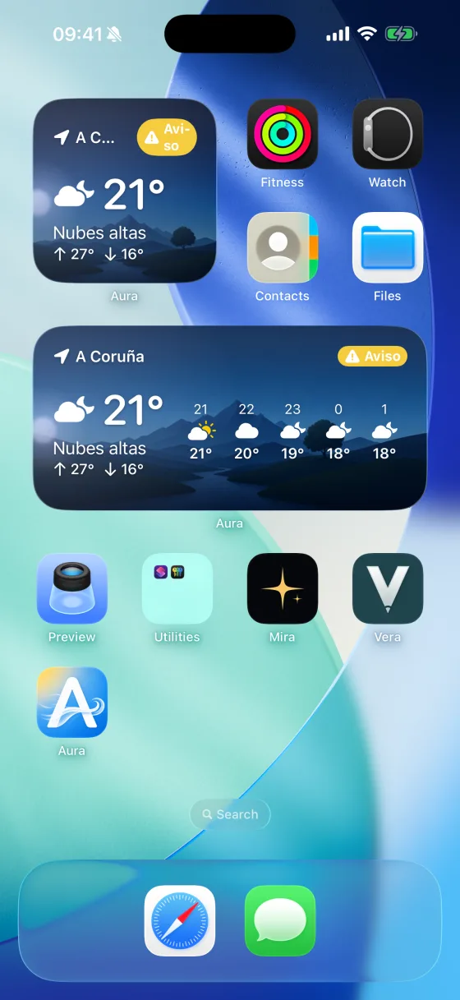
Un cielo que sigue al sol
Del amanecer a la noche, en directo
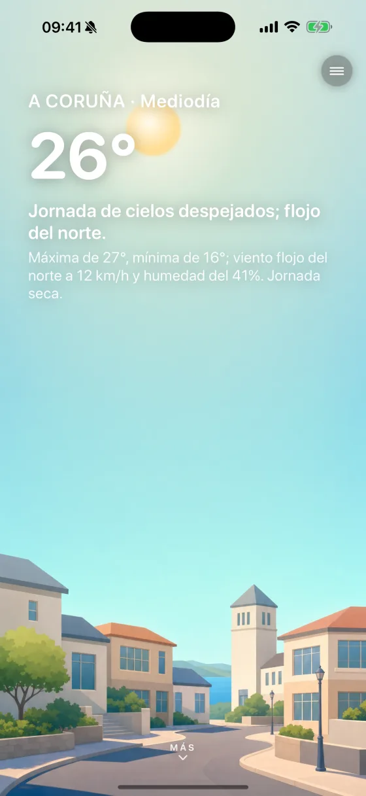
Avisos oficiales
Alertas CAP de AEMET, por provincia
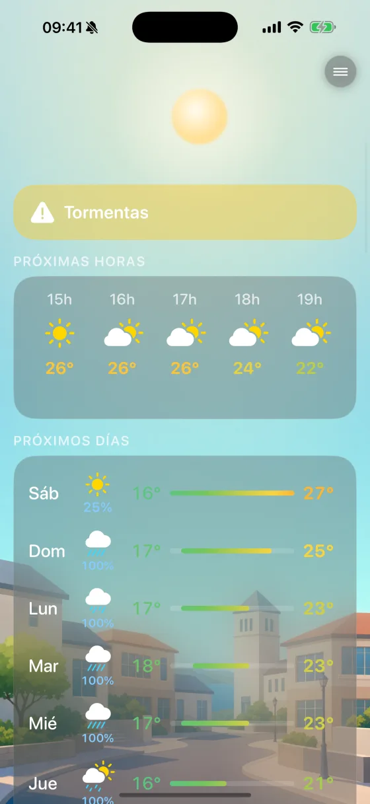
En tu muñeca
App y complicaciones de Apple Watch
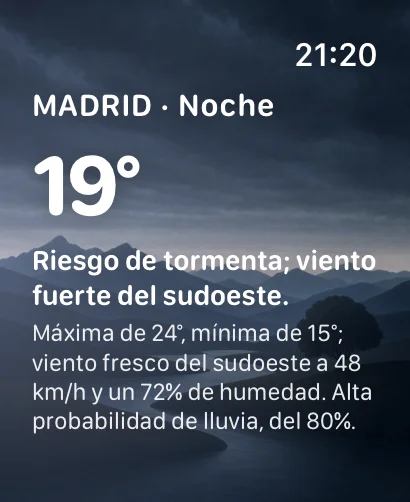
La temperatura real
De la estación de AEMET más cercana
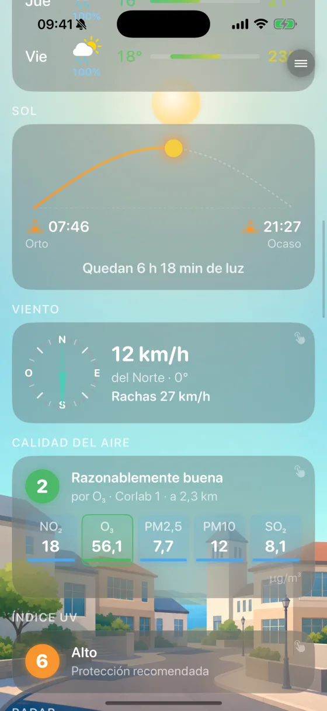
Descripción
Custom · promoWidgets de inicio y pantalla de bloqueo con los datos oficiales de AEMET, configurables por lugar guardado. Sin servidores, sin cuenta: tu clave vive en el dispositivo.
Aura lleva los datos de AEMET a cada superficie de Apple —iPhone, iPad y Apple Watch— sobre un cielo vivo que sigue al sol real… más
Screen · ASC-widgets
The same widget, every colour of the sky
The Home Screen widgets render the living sky behind the data, so a single size shifts palette with the hour and the weather — clear blue, a townscape teal, rainy slate, golden dusk. This is the art the “Widgets” CPP angle leads with.
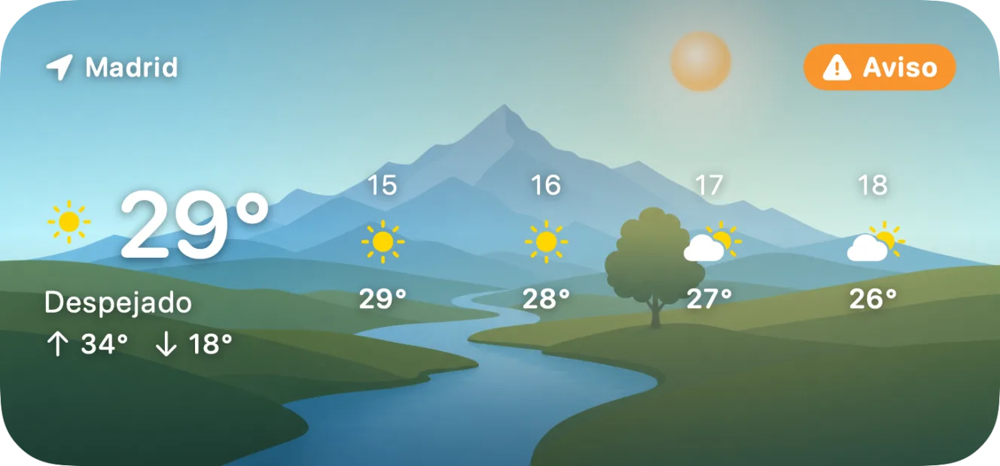
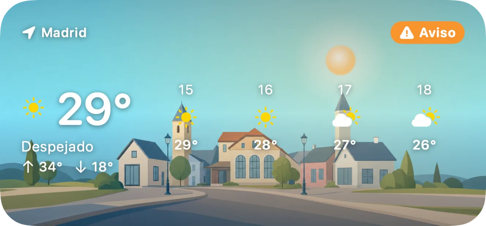
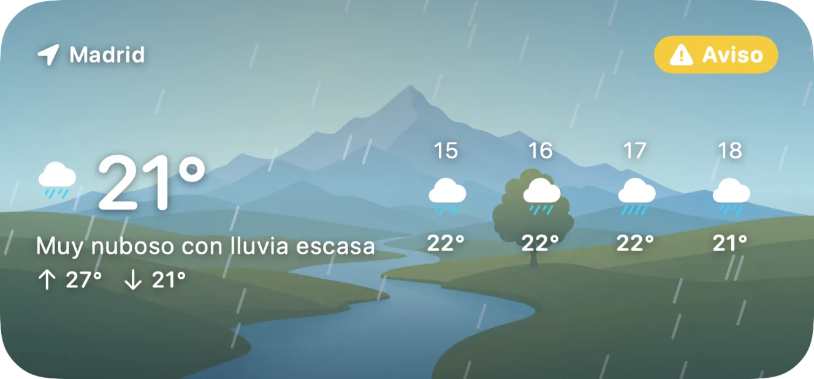
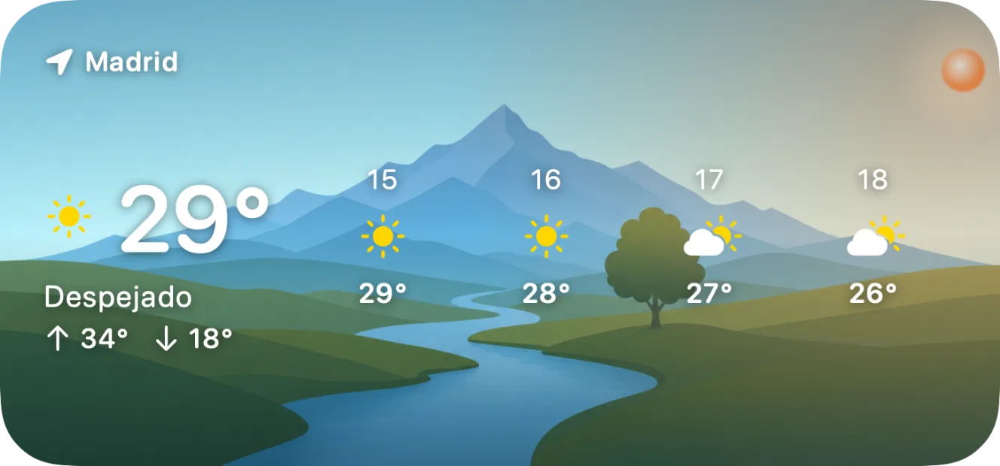
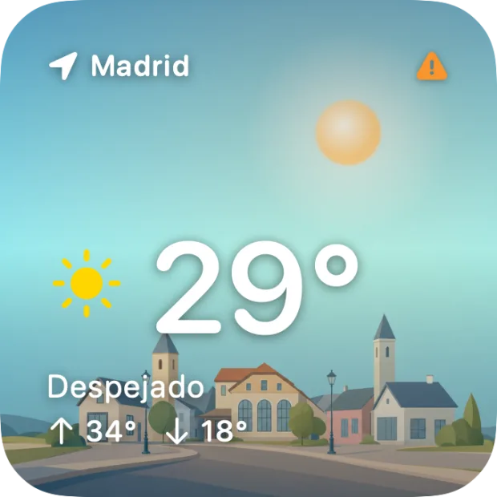
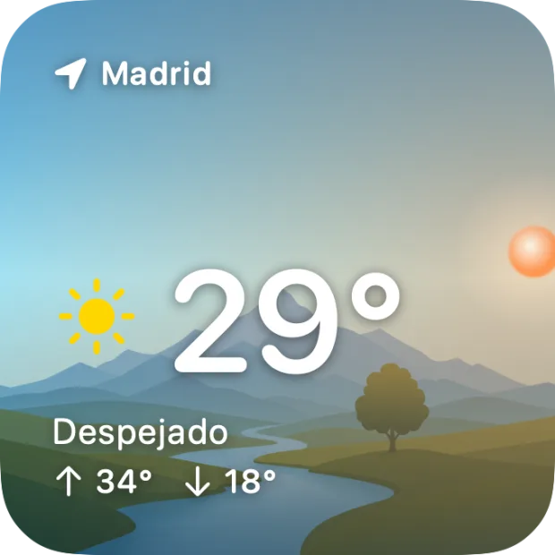
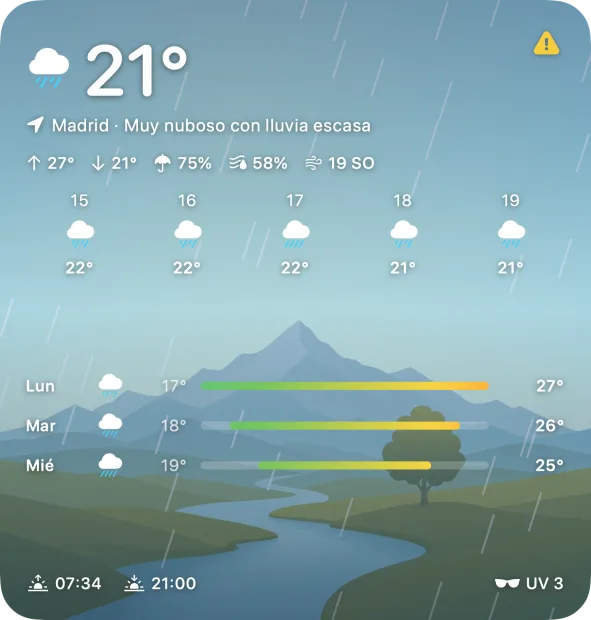
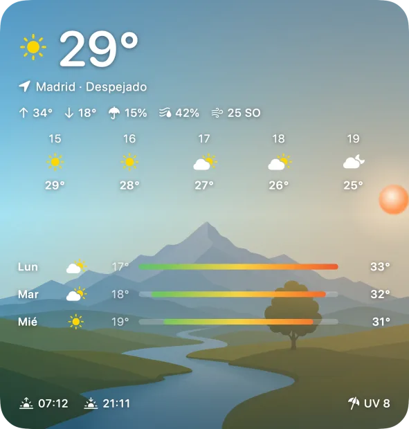
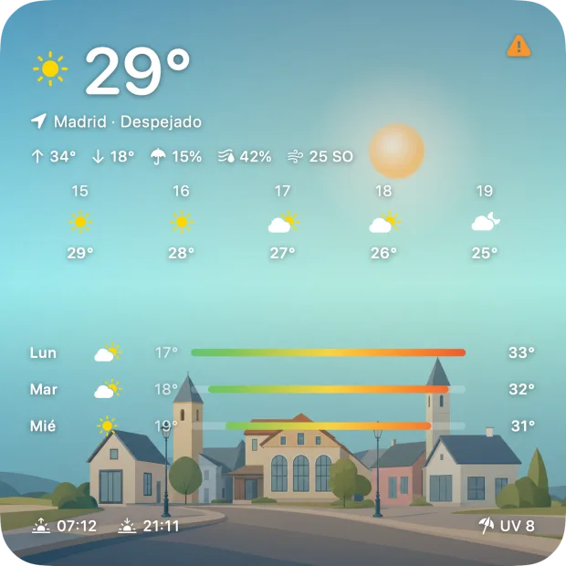
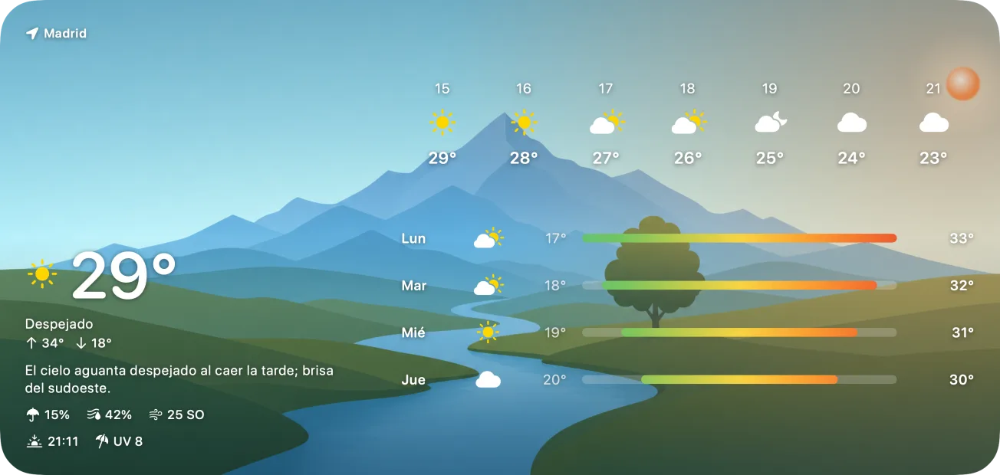
Screen · ASC-complications
Complications, in full colour
The Apple Watch angle draws on the complication set — corner, circular, rectangular and inline families, each themed to what it shows: UV, rain chance, wind, sun & moon, the day strip, avisos. Colour renders only.
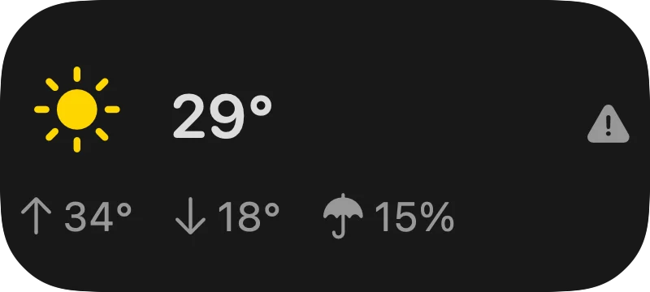
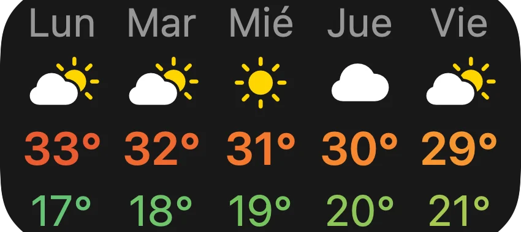
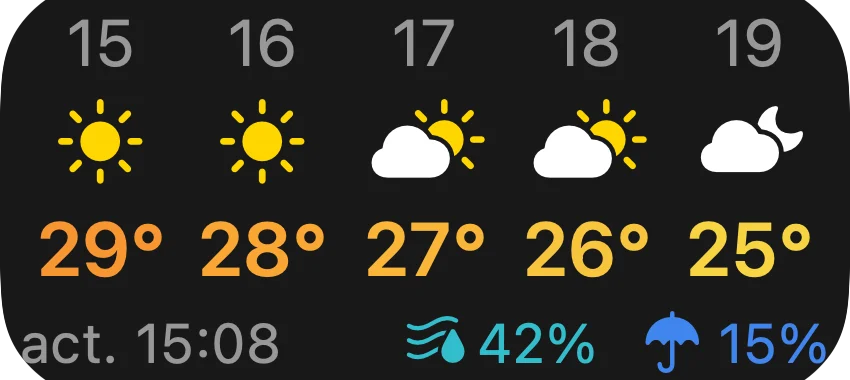
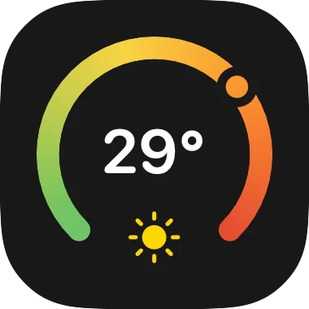
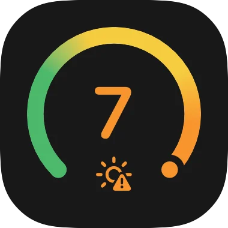
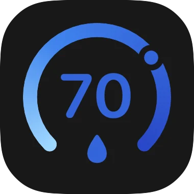
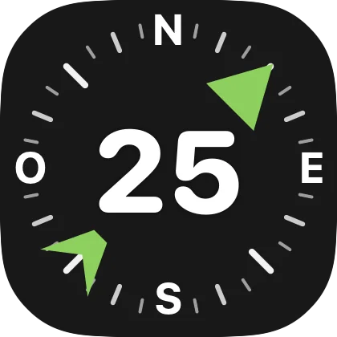
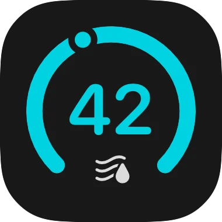
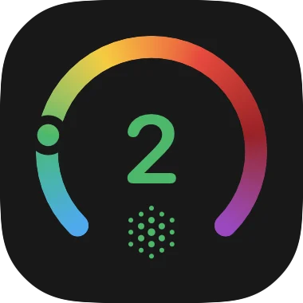
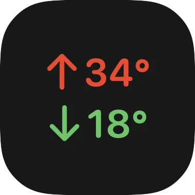

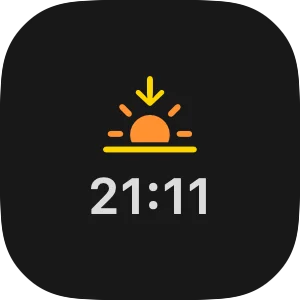
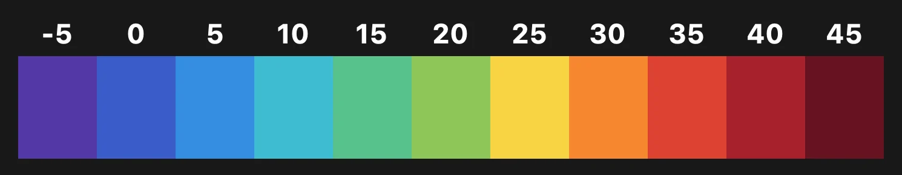
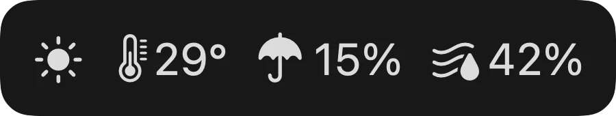
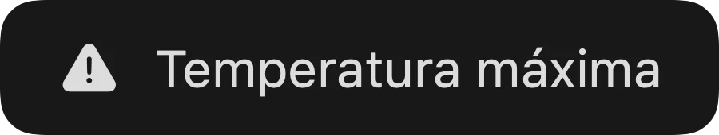
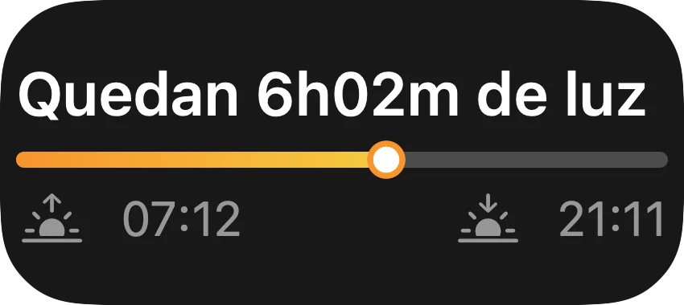
The recipe
Three layers, cleanly separated
The sky is the art layer, the UI is always the real screenshot, and every word is set by the compositor — so accents, kerning and the exact screen come out right on every run.
The sky background
The atmosphere behind each panel — one sky per time of day, reused across the set. The only layer that's painted rather than captured.
The app screenshot
The genuine Aura capture, dropped into the device frame. The store shows the real UI — never a mock-up of it.
Headline & fine print
Every word set by the compositor: perfect Spanish accents, exact kerning, and the same result on every run.